Intersection
GLSL Raymarching實驗。為一三維環境，兩顆球位移時會產生周圍空間扭曲效果，z方向移動時會影像材質粗糙度。串接ultralap 3di手勢互動，可三維控制球體位置，轉為網頁版後位置為隨機移動。

GLSL Raymarching實驗。為一三維環境，兩顆球位移時會產生周圍空間扭曲效果，z方向移動時會影像材質粗糙度。串接ultralap 3di手勢互動，可三維控制球體位置，轉為網頁版後位置為隨機移動。
製作過程中關於質地呈現與形體樣態的發展測試紀錄。
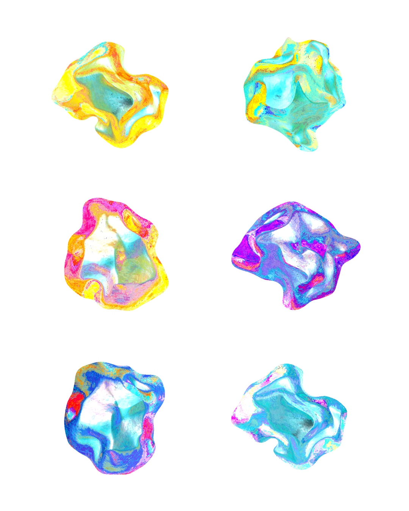
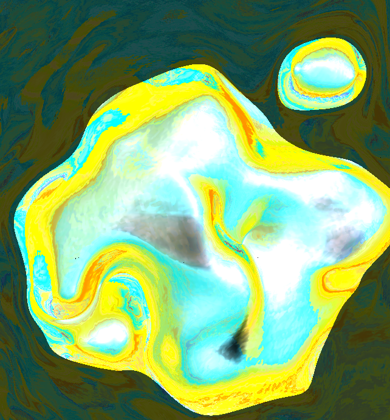
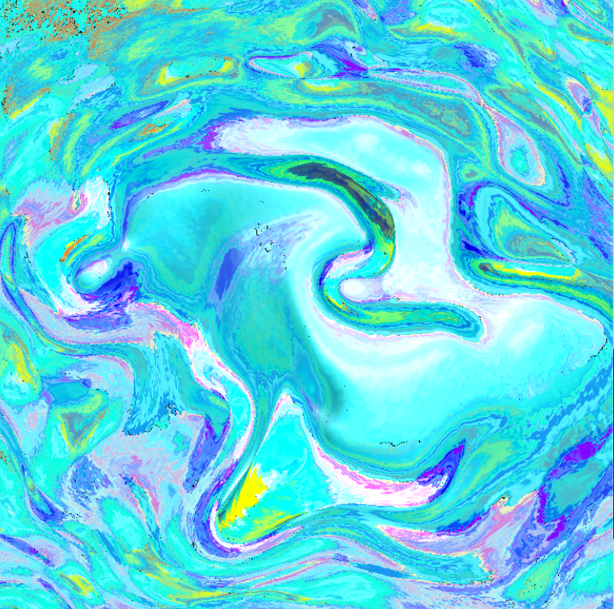
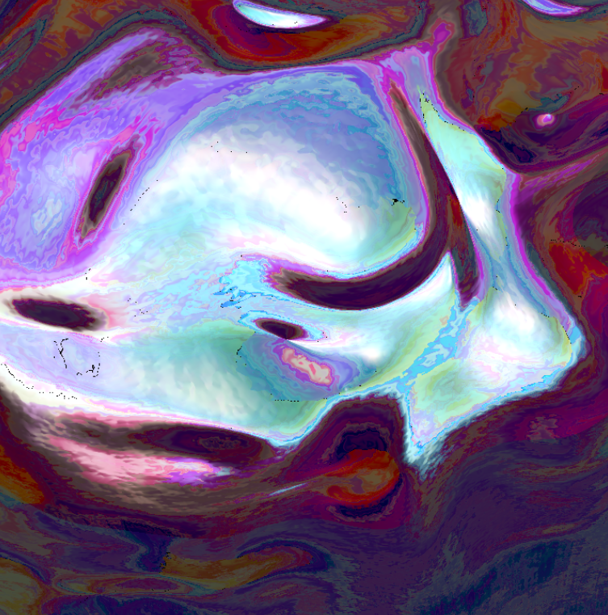
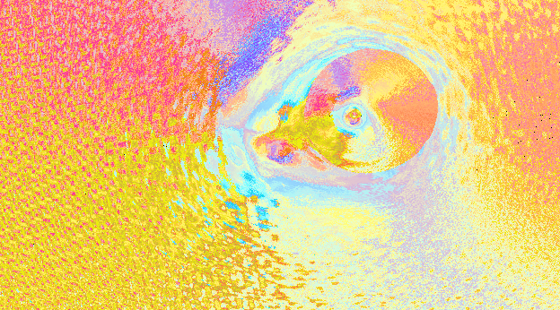
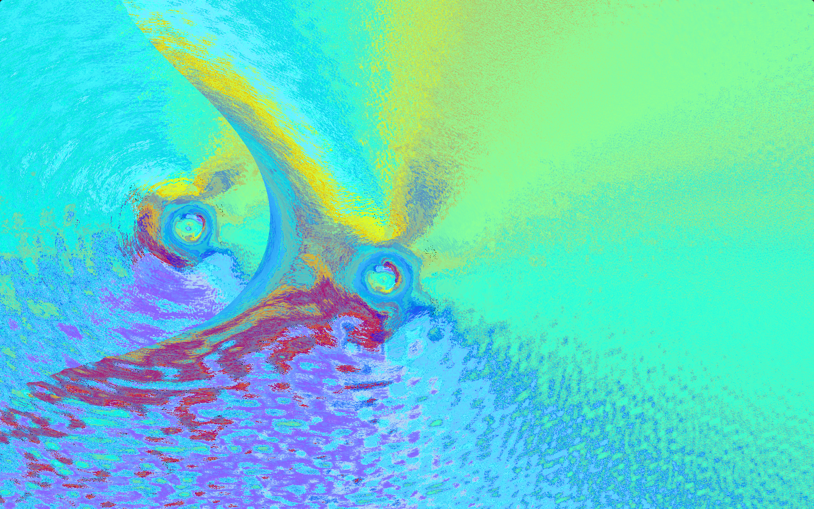
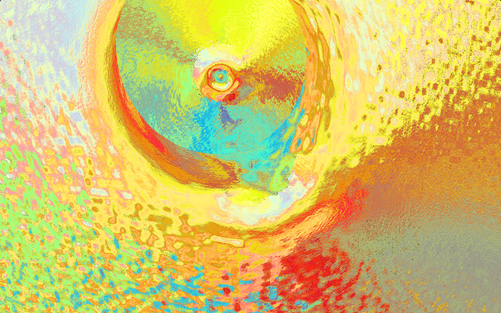
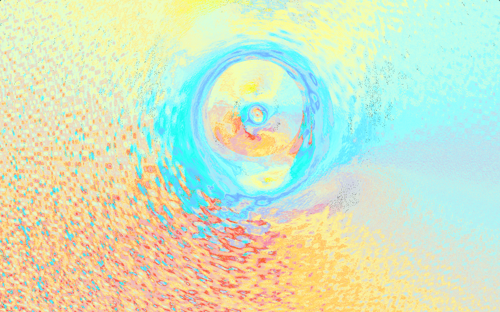
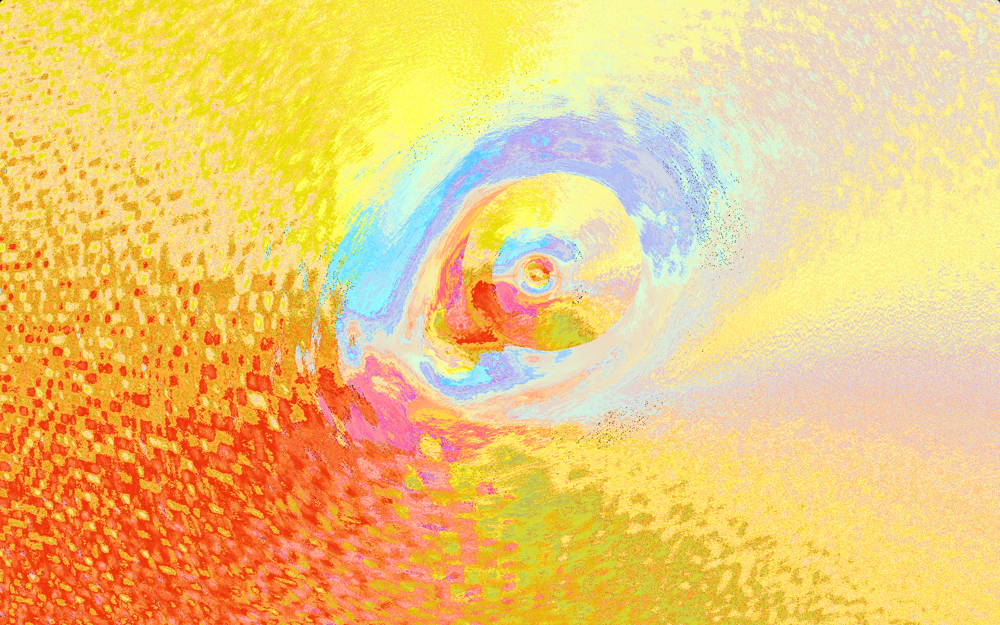
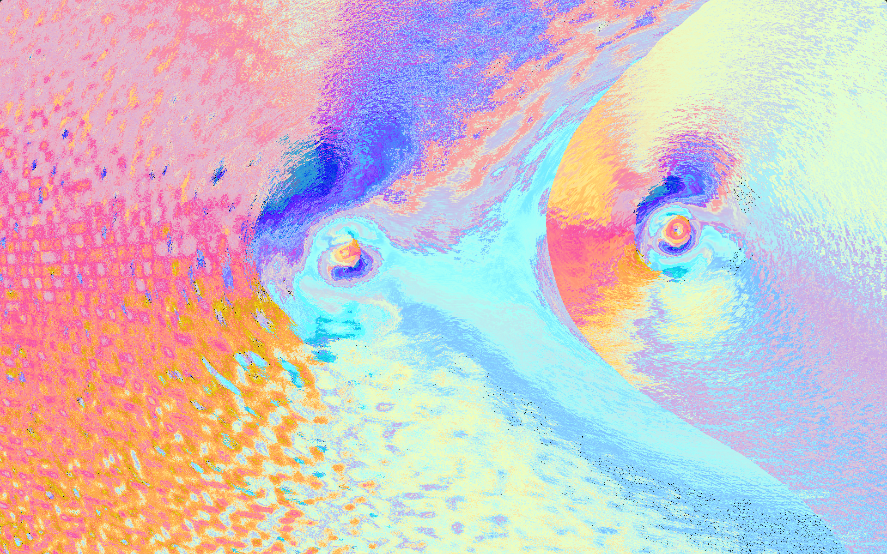
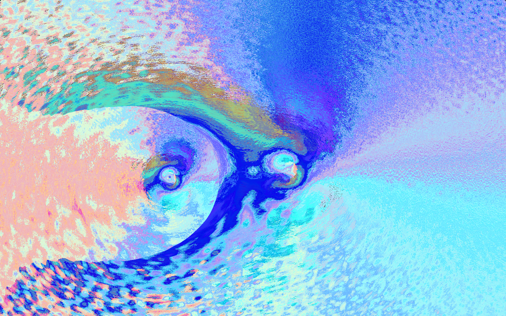